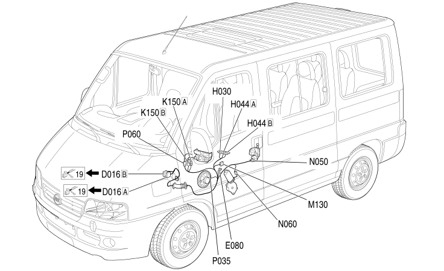

30 LEFT FRONT DOOR
- Path
- Electrical equipment > 2 WIRING > 30 LEFT FRONT DOOR
- Kind
- wiring harness
- Applies to
- all engines; all production periods
- Interactive page
- https://sloeber94.github.io/elrnDB-fDct/en/#/244002166
Applies to: all engines; all production periods

Topics that link to this page (13)
- D016A ADDITIONAL DASHBOARD/LEFT FRONT DOOR COUPLING (LEFT FRONT DOOR)
- D016B ADDITIONAL DASHBOARD/LEFT FRONT DOOR COUPLING (LEFT FRONT DOOR)
- E080 OVERTAKING SENSOR LED/BEEPER (LEFT FRONT DOOR)
- H030 ADJUSTABLE MIRRORS CONTROL (LEFT FRONT DOOR)
- H044A ELECTRIC WINDOW CONTROLS ON FRONT DRIVER'S DOOR (LEFT FRONT DOOR)
- H044B ELECTRIC WINDOW CONTROLS ON FRONT DRIVER'S DOOR (LEFT FRONT DOOR)
- K150A OVERTAKING SENSOR (MICRO-CAMERA) (LEFT FRONT DOOR)
- K150B OVERTAKING SENSOR (MICRO-CAMERA) (LEFT FRONT DOOR)
- M130 OVERTAKING SENSOR CONTROL UNIT (LEFT FRONT DOOR)
- N050 DRIVER'S FRONT DOOR LOCK GEARED MOTOR (LEFT FRONT DOOR)
- N060 DRIVER'S FRONT ELECTRIC WINDOW MOTOR (LEFT FRONT DOOR)
- P035 SPEAKER ON FRONT DOOR LEFT (LEFT FRONT DOOR)
- P060 DRIVER'S DOOR MIRROR (LEFT FRONT DOOR)